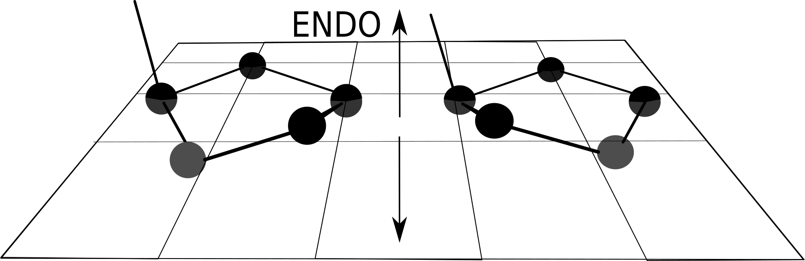

Sobre Modificações no Esqueleto
Estrutura, barreiras e efeitos estéricos
Resumo
A longa jornada em busca do entendimento da influência das conformações da ribose na estrutura do RNA perpassa pela compreensão da definição de ângulo de torção e pseudorotação estabelecida na década de 1940. Como será discutido, esta definição foi feita por Kilpatrick e colaboradores em relação às posições e deslocamentos dos átomos de carbono do anel [1], enquanto Altona e Sundaralingam (1972) tratam de ângulos [4]. Apesar de o trabalho de Altona ser amplamente referenciado por tratar de torções em ângulos, o trabalho seminal foi realizado por Kilpatrick [1]. Duas abordagens são referenciadas, ambas com formalismo muito semelhante e com a definição de fase — desenvolvida para o entendimento das possíveis orientações do ciclopentano.
No anel ciclopentano, as forças de torção em torno das ligações estão em oposição às forças que tendem a manter a conformação planar tetraédrica e dão origem à conformação com átomos projetados para fora do plano [1]. Os átomos nesta situação retorcida — puckered ring — estão organizados numa conformação de menor energia em comparação com a não retorcida [1].
Sugar Puckering
No anel simétrico, as diferenças entre as posições dos átomos são pequenas, mas suficientes para dar origem à estrutura retorcida (sugar puckering) [1][2][3]. Duas conformações de menor energia são possíveis para o anel de cinco membros: a conformação envelope (E) e a conformação twist (T) [2]. No anel simétrico, os átomos podem mudar suas posições, existindo um equilíbrio entre as projeções E e T. As conformações se misturam, com envelope em relação ao oxigênio e twist para carbonos.
Na molécula de açúcar, onde existem substituintes, as interações entre os grupos e a sobreposição causam maior torção da molécula e maior desvio em relação à estrutura planar, com predominância da conformação twist [2]. As conformações também são classificadas segundo as projeções em relação à ligação C4'–C5'. Átomos projetados na direção da ligação são classificados como endo e, na direção oposta, como exo [1][2][3][4]. A nomenclatura endo-exo é a mais geral e a mais utilizada.
Os carbonos das posições 2' e 3', quando a ribose se encontra na conformação twist, podem estar projetados na direção da ligação C4'–C5' ou na direção oposta, denominada exo. Desta forma, eles se encontram nas posições C2'-endo–C3'-exo ou C2'-exo–C3'-endo, comumente chamadas C2'-endo e C3'-endo, respectivamente [2]. Uma representação destas conformações é mostrada na Figura 1 (conformações endo-exo). Estas duas conformações existem em equilíbrio no RNA [2][3].
As amplitudes máximas de movimento dos átomos na molécula podem ser utilizadas para mapear as suas conformações. O conjunto completo de estados do anel pode ser visualizado na Figura 2 (espaço de conformações). Em seu trabalho, Kilpatrick mostra a existência de um estado retorcido intermediário entre os estados de menor energia que não corresponde à estrutura planar e hipotetiza que o caminho de menor energia passa por este estado intermediário [1]. O caminho proposto levou à descrição dos estados conformacionais do ciclopentano por meio do ângulo de pseudorotação [1][2][3][4][5][6].
Ângulos de Pseudorotação
Para descrever os estados conformacionais de ciclopentanos, foi desenvolvido o conceito de pseudorrotação por Kilpatrick e seu grupo em 1947 [1]. Esta definição encontrou grande aplicação em ácidos nucleicos, especialmente na descrição das conformações de riboses [2][3]. Ela parte da descrição das projeções dos átomos de carbono para fora do plano do anel [5]. O ângulo de pseudorrotação descreve os máximos nas projeções por meio de uma fase, que assume valores de 0° e 180° quando os ângulos μ₂ e μ₃ assumem valores máximos [1][2][3]. Estas são as condições C2'-endo e C3'-endo, respectivamente [2].
Na definição de Altona e Sundaralingam [4], dado o ângulo de fase P, os ângulos de torção se relacionam por νi = νmax cos(P + j·f), onde j é o índice que representa o ângulo (de 0 a 4) e f é a fração de ângulo 720°/5 = 144°. Com isto, tem-se uma descrição das deformações máximas em função da posição do átomo na molécula indexada pelo parâmetro ou ângulo de fase P. Quando P = 0, νi é máximo para n·2(i-1) = 0, que ocorre na posição i = 0. Portanto, para P = 0, a deformação máxima se encontra no átomo indexado por i = 0. Podemos escolher uma fase tal que os máximos visitem diferentes pontos da ribose. Isto gera um mecanismo rotacional para o máximo e, em função disto, a fase P é chamada de ângulo de pseudorrotação. Esta definição supõe deformações harmônicas compatíveis com a geometria da molécula [1][4][5].
Generalizações posteriores do formalismo foram propostas por Cremer e Pople (1975) [6][7] e aplicadas a anéis de cinco membros. A correspondência entre estes valores teóricos e os dados computacionais está ilustrada na Figura 3 (esquema de pseudorotação).
i = 0…4 indexa os átomos na convenção de Altona (1972):
i=0 → C4', i=1 → O4', i=2 → C1',
i=3 → C2', i=4 → C3'.
Valores normalizados com νmax = 1.
A célula azul escuro
indica o máximo (átomo mais deslocado para fora do plano);
a célula azul claro
indica o mínimo.
| P | Conformação | C4' i=0 | O4' i=1 | C1' i=2 | C2' i=3 | C3' i=4 | Máximo |
|---|---|---|---|---|---|---|---|
| 0° | C3'-endo North | +1.000 | -0.809 | +0.309 | +0.309 | -0.809 | C4' |
| 36° | C4'-exo North | +0.809 | -1.000 | +0.809 | -0.309 | -0.309 | C4' |
| 72° | O4'-endo East | +0.309 | -0.809 | +1.000 | -0.809 | +0.309 | C1' |
| 108° | C1'-exo East | -0.309 | -0.309 | +0.809 | -1.000 | +0.809 | C1' |
| 144° | C2'-endo South | -0.809 | +0.309 | +0.309 | -0.809 | +1.000 | C3' |
| 180° | C3'-exo South | -1.000 | +0.809 | -0.309 | -0.309 | +0.809 | C3' |
| 216° | C4'-endo West | -0.809 | +1.000 | -0.809 | +0.309 | +0.309 | O4' |
| 252° | O4'-exo West | -0.309 | +0.809 | -1.000 | +0.809 | -0.309 | O4' |
| 288° | C1'-endo | +0.309 | +0.309 | -0.809 | +1.000 | -0.809 | C2' |
| 324° | C2'-exo North | +0.809 | -0.309 | -0.309 | +0.809 | -1.000 | C2' |
Como ler a tabela: cada linha corresponde a um valor de P. O átomo em azul escuro tem o maior deslocamento fora do plano — é ele que define o nome da conformação (endo = mesmo lado que C5'; exo = lado oposto). À medida que P aumenta de 0° a 324°, o máximo gira pelo anel: este é o mecanismo de pseudorotação. As regiões North (P ≈ 0°, C3'-endo, RNA) e South (P ≈ 144–180°, C2'-endo, DNA) são as mais relevantes biologicamente.
Um passo adiante no processo de modelagem das riboses foi dado por Dunitz(1972), com a demonstração de relações lineares entre os deslocamentos e ângulos de torções infinitesimais[dunitz72], então as aplitudes e fases nas equações de definição de Kilpatrick[1] e Altona[4] podem ser relacionados formalmente. No entanto, para deslocamentos finitos, como os apresentados pelas estruturas das riboses, há um desvio significante desta relação linear[6][dunitz72]. O processo de modelagem das torções no anel da ribose, descrito por Kilpatrick, é uma forma elegante porém uma patente aproximação do processo real. Diante da impossibilidade de se descrever as conformações da ribose de forma exata, Cremer e Pole(1974) apresentam uma proposta de generalização desta representação aplicável a aneis com diferentes membros[6]. A generalização proposta apresenta correção em relação à proposta por Kilpatrick sem necessidade de aproximações[6].
Na década seguinte, Olson e grupo fizeram uma análise experimental e proposta energética para as conformações da ribose[10][11].
A
Considerações sobre energia
As duas conformações existem em equilíbrio [2][3]; porém, a transição entre as mesmas não passa pela estrutura planar do anel, e sim por um arranjo mais complexo [2][3][8][9]. A distribuição experimental de energia ao longo deste equilíbrio está registrada na Figura 4 (panorama energético experimental). Estudos teóricos e experimentais indicam que a barreira de interconversão entre as formas C2'-endo e C3'-endo é relativamente baixa, da ordem de 2-5 kcal/mol, permitindo flexibilidade conformacional significativa da ribose em solução [10][11][12].
Vamos supor que se deseja modelar a ribose com uma função estatística capaz de prever suas conformações, como a utilizada na seçaõ anterior e, através dela, se obter a energia do sistema. Comecemos com o estabelecimento da equação para as projeções de forma simples.
A correpondente função de partição canônica do sistema é então:
Vamos fixar o termo tmax=1 e avaliar os possíveis resultados do mapeamento da função. Para P = 0, o argumento da equação 4, é mapeado em projeções em relação ao plano de equilíbrio da ribose. Neste caso, P=0, mapeia a estrutura planar em seus estado de equilíbro não retorcido[1][4][]. P=1 mapeia os estados relacionados à torção da ribose como um todo, enquanto P= 2 mapeia os estador retorcidos da ribose[1][2][3][4]. Portanto, a integral sobre P varre o espaço configuracional do sistema. Em outras palavras, cada P representa um microestado do sistema e a integral sobre P contabiliza todos os microestados acessíveis ao sistema.
Podemos então buscar os valores médios das grandezas de interesse utilizando a nossa equação adaptada no nosso toy model para tmax fixo, com função de partir dada por:
Em resumo, temos uma função que mapeia as projeções dos átomos da ribose para fora do plano. Esta função contém dois parâmetros, um relacionado à uma fase e outro às amplitudes das projeções. Podemos considerar, em um modelo inicial, as amplitudes das projeções fixas, e então a energia do sistema depende apenas da fase. Nestas condições, a fase pode assumir valores tais que cada fase resulta em um conjunto de projeções de átomos para fora do plano. Estas projeções podem ser utilizadas para se modelar o sistema energeticamente. Desta forma, encontramos uma relação entre os microestados da ribose e a energia confromacional do sistema. De posse desta relação pode-se construir a função de partição canonica conformacional da ribose. Temos um conjunto de estados indexados pelo parametro contínuo P e, portanto a função deve ser integrada no intervalo de 0 a 2*pi. Os valores médios das grandezas de interesse físico podem ser obtidos por meio da relação com a variável dinâmica do hamiltoniano, se este for função desta variável, de forma protocolar da física estatística.
Conclusão e Conexão com as Modificações
A compreensão do fenômeno de pseudorotação e das preferências conformacionais da ribose o equilíbrio conformacional, favorecendo uma das formas endo em detrimento da outra. é fundamental para o estudo das modificações químicas no esqueleto do RNA...
Modificações na ligação fosfodiéster...
Referências
- [1] J. E. Kilpatrick, K. S. Pitzer e R. Spitzer. The Thermodynamics and Molecular Structure of Cyclopentane. Journal of the American Chemical Society, 1947, 69 (10), pp 2483–2488.
- [2] W. Saenger. Principles of Nucleic Acid Structure. Springer, Nova York, 1984, pp. 9–28.
- [3] S. Neidle. Nucleic Acid Structure and Recognition. Oxford University Press, 2002.
- [4] C. Altona e M. Sundaralingam. Conformational Analysis of the Sugar Ring in Nucleosides and Nucleotides. A New Description Using the Concept of Pseudorotation. Journal of the American Chemical Society, 1972, 94 (23), pp 8205–8212.
- [5] H. J. Geise, C. Altona e C. Romers. The Relations Between Torsional and Valency Angles of Cyclopentane. Tetrahedron, 1967, 23 (2), pp 439–463.
- [6] D. Cremer e J. A. Pople. A General Definition of Ring Puckering Coordinates. Journal of the American Chemical Society, 1975, 97 (6), pp 1354–1358.
- [7] D. Cremer e J. A. Pople. Molecular Orbital Theory of the Electronic Structure of Organic Compounds. XXIII. Pseudorotation in Saturated Five-Membered Ring Compounds. Journal of the American Chemical Society, 1975, 97 (6), pp 1358–1367.
- [8] M. Levitt e A. Warshel. Extreme Conformational Flexibility of the Furanose Ring in DNA and RNA. Journal of the American Chemical Society, 1978, 100 (9), pp 2607–2613.
- [9] W. J. Adams, H. J. Geise e L. S. Bartell. Structure, Equilibrium Conformation, and Pseudorotation in Cyclopentane. An Electron Diffraction Study. Journal of the American Chemical Society, 1970, 92 (17), pp 5013–5019.
- [10] W. K. Olson e J. L. Sussman. How Flexible Is the Furanose Ring? 1. A Comparison of Experimental and Theoretical Studies. Journal of the American Chemical Society, 1982, 104 (1), pp 270–278.
- [11] W. K. Olson. How Flexible Is the Furanose Ring? 2. An Updated Potential Energy Estimate. Journal of the American Chemical Society, 1982, 104 (1), pp 278–286.
- [12] H. P. M. de Leeuw, C. A. G. Haasnoot e C. Altona. Empirical Correlations Between Conformational Parameters in β-D-Furanoside Fragments Derived from a Statistical Survey of Crystal Structures of Nucleic Acid Constituents. Full Description of Nucleoside Molecular Geometries in Terms of Four Parameters. Israel Journal of Chemistry, 1980, 20 (1-2), pp 108–126.
© 2026 Daniel Batista de Jesus
Documento estruturado para inserção de figuras e expansão futura do texto.

Representação das conformações da ribose C2'-endo e C3'-endo, mostrando a projeção dos átomos de carbono em relação à ligação C4'–C5'. Fonte: adaptado de Saenger (1984) [2].

Representação do espaço conformacional da ribose, indicando as regiões de C2'-endo e C3'-endo e os caminhos de interconversão ao longo do ângulo de pseudorotação P. Fonte: adaptado de Altona & Sundaralingam (1972) [4].

Esquema de visualização das projeções de máximos mapeados pela pseudorrotação. (a) Espaço entre extremos de posições atômicas; (b) máximo em O' ou 0; (c) C1'; (d) C2'; (e) C3'; (f) C4'. Fonte: adaptado de Kilpatrick et al. (1947) [1].
Perfil de energia livre experimental em função do ângulo de pseudorotação P, obtido a partir de dados de RMN ou cristalografia. Os mínimos correspondem a C2'-endo e C3'-endo. Fonte: a inserir.